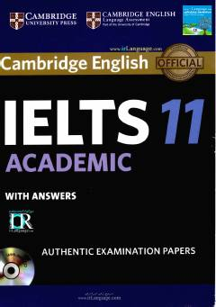

CIAkademik IELTS imtihoniga tayyorgarlik ko'rish uchun mo'ljallangan rasmiy testlar to'plami.
Ushbu qo'llanma ingliz tilini chet tili sifatida o'rganuvchilar uchun mo'ljallangan bo'lib, akademik IELTS imtihoniga tayyorgarlik ko'rish uchun original test materiallari va javoblarni o'z ichiga oladi. Kitob tinglash, o'qish, yozish va so'zlashish ko'nikmalarini baholash bo'yicha to'rtta amaliy testni taqdim etadi. Shuningdek, talabalar va o'qituvchilar uchun imtihon formatini tushunishga yordam beradigan namunaviy javoblar ham mavjud.